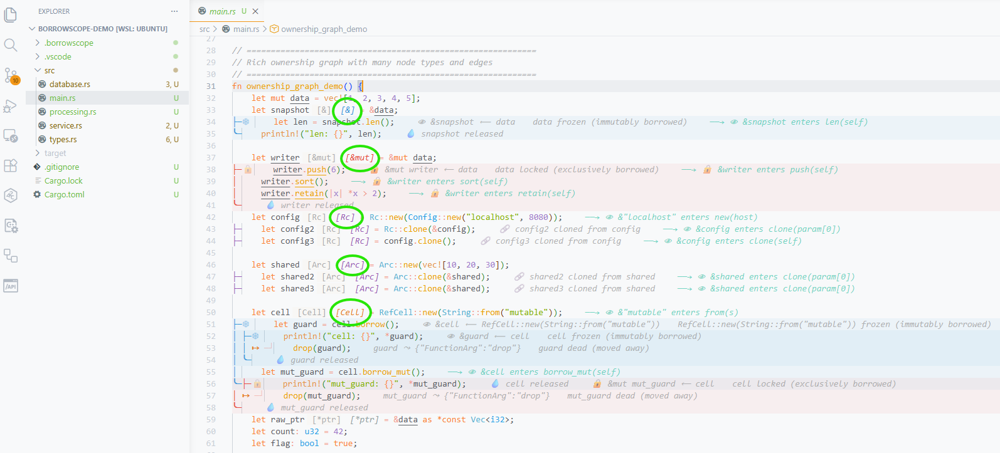

The first feedback channel is inline decorations applied directly to the source code. These provide immediate ownership information without requiring the developer to open a panel or hover over anything. Decorations are visible at a glance while reading code, making ownership relationships part of the reading experience rather than a separate investigation step. The extension provides five types of inline decorations, each targeting a different aspect of ownership.
After each variable name in a let binding, the extension displays a small color-coded label indicating the variable's ownership category. These labels appear as italic text in a distinct color, visually separated from the code by a small margin. The labels are: [&] for shared references (blue), [&mut] for mutable references (red), [Rc] for reference-counted pointers (purple), [Arc] for atomic reference-counted pointers (purple), [Cell] for interior mutability types (orange), [*ptr] for raw pointers (gray), and [closure] for closure types (green).
Plain owned values and Copy types do not receive annotations, keeping the display clean for the common case. This means annotations only appear where ownership is non-trivial: where the developer needs to be aware of borrowing rules, shared ownership semantics, or interior mutability. The annotations are generated from the LSP server's textDocument/inlayHint response, which provides the position and label for each hint. The extension maps each label to a TextEditorDecorationType with the appropriate color from the configuration.
export function getColorForLabel(label: string): string { const cfg = vscode.workspace.getConfiguration("borrowscope.colors"); switch (label) { case "[&]": return cfg.get("sharedBorrow", "#3498db"); case "[&mut]": return cfg.get("mutableBorrow", "#e74c3c"); case "[Rc]": return cfg.get("rcArc", "#9b59b6"); case "[Arc]": return cfg.get("rcArc", "#9b59b6"); case "[Cell]": return cfg.get("move", "#e67e22"); case "[*ptr]": return cfg.get("drop", "#95a5a6"); case "[closure]": return cfg.get("owned", "#2ecc71"); } }

Figure: Ownership category annotations ([&], [&mut], [Rc], [Arc], [closure]) displayed inline after variable names
The most distinctive visual feature of the extension is the borrow lifeline system. For each active borrow in the function, the extension draws a vertical line in the editor gutter spanning the borrow's active scope (from declaration to last use). The line uses Unicode box-drawing characters: ├─ at the start (borrow begins), │ for each intermediate line (borrow active), and ╰─ at the end (borrow released). Each lifeline is color-coded: blue for shared borrows, red for mutable borrows.
Beyond the line characters, the extension adds emoji labels that communicate the semantic meaning at a glance. At the start of a shared borrow: 👁 &borrower ⟵ target (the eye indicates read-only observation). At the start of a mutable borrow: 🔒 &mut borrower ⟵ target (the lock indicates exclusive access). At the end of any borrow: 💧 borrower released (the droplet indicates the borrow is returned). On the target variable's line during a shared borrow: ❄ target frozen (cannot be mutated). On the target during a mutable borrow: 🔒 target locked (cannot be accessed at all).
The lifeline system also visualizes moves and Rc/Arc clones. A move is shown as ↦ source ⤳ destination in orange, followed by ─┘ source dead indicating the variable can no longer be used. An Rc/Arc clone is shown as ├─ 🔗 clone cloned from source in purple. Conflict zones are highlighted with ┃ in yellow with a warning message. Each decoration includes a hover message explaining the relationship in plain English.
// Shared borrow lifeline (blue) for (const s of scopes.filter(s => !s.is_mutable)) { for (let line = s.range.start.line; line <= s.range.end.line; line++) { let char = "│ "; let suffix = ""; if (line === s.range.start.line) { char = "├─"; suffix = ` 👁 &${s.borrower} ⟵ ${s.target}`; } else if (line === s.range.end.line) { char = "╰─"; suffix = ` 💧 ${s.borrower} released`; } decorations.push({ line, char, suffix, color: COLORS.shared, hover: `& borrow: ${s.borrower} reads ${s.target}` }); } // Frozen indicator on target variable decorations.push({ line: s.range.start.line, char: "❄ ", suffix: `${s.target} frozen (immutably borrowed)`, color: "rgba(52, 152, 219, 0.4)" }); }
When the LSP server detects borrow conflicts (overlapping mutable and shared borrows of the same variable), it publishes them as diagnostics via textDocument/publishDiagnostics. The extension receives these and applies two visual indicators: a background highlight on the conflict region (the lines where both borrows are simultaneously active) and the standard VS Code squiggly underline. The diagnostic source is set to "BorrowScope" to distinguish these from compiler errors.
The extension also provides navigation commands for conflicts: borrowscope.nextConflict (Ctrl+Shift+N) jumps to the next conflict diagnostic after the cursor, and borrowscope.prevConflict (Ctrl+Shift+P) jumps to the previous one. Both commands wrap around at the end/beginning of the file. If no conflicts exist, they show an informational message. This allows the developer to quickly cycle through all ownership issues in a file without scrolling manually.
function nextConflict(): void { const editor = vscode.window.activeTextEditor; const diagnostics = vscode.languages.getDiagnostics(editor.document.uri) .filter(d => d.source === "BorrowScope"); if (diagnostics.length === 0) { vscode.window.showInformationMessage("BorrowScope: No conflicts in this file"); return; } const currentLine = editor.selection.active.line; const next = diagnostics.find(d => d.range.start.line > currentLine); if (next) { editor.selection = new vscode.Selection(next.range.start, next.range.start); editor.revealRange(next.range, vscode.TextEditorRevealType.InCenter); } else { // Wrap around to first conflict const first = diagnostics[0]; editor.selection = new vscode.Selection(first.range.start, first.range.start); editor.revealRange(first.range, vscode.TextEditorRevealType.InCenter); } }
When a reference is passed to another function, the extension displays an inline annotation after the call site showing where the borrow flows. The annotation appears as italic teal text: ──→ 👁 &data enters process(param) for shared borrows, or ──→ 🔒 &data enters process(param) for mutable borrows. The eye emoji indicates read-only access in the callee; the lock indicates exclusive access.
These annotations are generated from the borrowscope/crossFunctionBorrows LSP response. Each cross-function borrow has a path with an Origin segment (the variable in the caller) and a Parameter segment (the parameter in the callee). The extension renders the annotation on the Origin's line, showing the target function name and parameter name. Hovering the annotation shows a tooltip with the full borrow path details including mutability and file location.
function applyCrossFunctionAnnotations(editor, crossBorrows) { const decorations = crossBorrows.map(b => { const line = (b.origin_line || 1) - 1; const targetFn = b.path[1]?.function_name || "?"; const paramName = b.path[1]?.variable || "?"; const isMut = b.path[1]?.is_mutable; return { range: new vscode.Range(line, 0, line, 0), renderOptions: { after: { contentText: ` ──→ ${isMut ? "🔒" : "👁"} &${b.origin_variable} enters ${targetFn}(${paramName})`, color: "rgba(26, 188, 156, 0.6)", fontStyle: "italic", } }, hoverMessage: `**Cross-function borrow**\n\n\`${b.origin_variable}\` is passed as...`, }; }); editor.setDecorations(crossFnDecorationType, decorations); }
When runtime events are available (from borrowscope-runtime execution), the extension overlays additional decorations showing observed runtime behavior. These appear only when borrowscope.runtime.enabled is set to true and a valid events file exists at the configured path. The runtime overlay provides three types of information that static analysis cannot: actual timing (how long each variable lived in nanoseconds), drop order (the exact sequence in which variables were destroyed), and divergences (where runtime behavior differs from static prediction).
Runtime decorations use a distinct visual style to differentiate them from static decorations: green text for timing annotations, numbered badges for drop order, and yellow/red highlights for divergences. The overlay is applied to the active editor whenever the events file changes (detected by the file watcher) or when the developer switches to a different file. Events are filtered by file path to show only events relevant to the currently visible code.
The merge between static and runtime data happens in the mergeViews() function, which correlates runtime variable IDs with static variable declarations by matching on name and line number. The result is a MergedVariable[] array where each entry has both static information (type, category) and runtime information (lifetime, borrow count, ref count peak, drop order). Variables that appear only in runtime (not in static analysis) are marked as "runtime_only"; variables that appear only in static analysis are marked as "static_only". This merge is described in detail in Section 5.